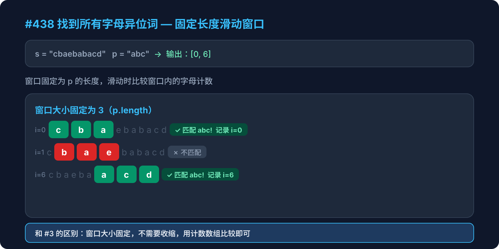

Hot 100 · 滑动窗口 · 第2周

给定两个字符串 s 和 p，找到 s 中所有 p 的 字母异位词 的子串，返回这些子串的起始索引。
异位词指由相同字母重排列形成的字符串（包括相同的字符串）。不考虑输出顺序。
输入：s = "cbaebabacd", p = "abc"
输出：[0, 6]
解释：
起始索引 0 → "cba" 是 "abc" 的异位词
起始索引 6 → "bac" 是 "abc" 的异位词| 题目 | 任务 | 核心思路 |
|---|---|---|
#49 字母异位词分组 |
给一组词，按异位词分组 | 排序/计数 → 哈希分组 |
#438 本题 |
在字符串中找异位词子串 | 固定窗口 + 计数比较 |
窗口大小是固定的还是可变的？
点击每一步展开详细说明
创建一个长度为 26 的数组，统计 p 中每个字母出现的次数。
const pCount = new Array(26).fill(0)
for (const c of p) pCount[c.charCodeAt(0) - a]++
// p = "abc" → pCount = [1,1,1,0,0,...,0]同样创建长度 26 的数组，用来记录当前窗口内字符的频次。
const sCount = new Array(26).fill(0)窗口内的字符变化时，同步更新这个数组即可。
遍历 s，每次右指针移入一个字符，当窗口超过 p.length 时，左边的字符移出。
当窗口大小达到 p.length 时（即 i >= p.length - 1），比较两个频次数组。
如果 pCount 和 sCount 完全相等，说明当前窗口是一个异位词，记录起始索引。
if (i >= p.length - 1) {
if (pCount.join(',') === sCount.join(',')) {
result.push(i - p.length + 1)
}
}function findAnagrams(s, p) {
if (s.length < p.length) return []
const result = []
const pCount = new Array(26).fill(0)
const sCount = new Array(26).fill(0)
const a = 'a'.charCodeAt(0)
for (const c of p) pCount[c.charCodeAt(0) - a]++
for (let i = 0; i < s.length; i++) {
sCount[s[i].charCodeAt(0) - a]++
if (i >= p.length) {
sCount[s[i - p.length].charCodeAt(0) - a]--
}
if (i >= p.length - 1) {
if (pCount.join(',') === sCount.join(',')) {
result.push(i - p.length + 1)
}
}
}
return result
}每次都 join 比较很慢，怎么优化？
| 特征 | #3 最长无重复子串 | #438 找异位词（本题） |
|---|---|---|
| 窗口类型 | 可变窗口 | 固定窗口 |
| 数据结构 | Set 记录字符 | 计数数组 [26] |
| 收缩方式 | while 循环收缩左边界 | 固定滑动，左边减右边加 |
| 判断条件 | Set 中是否已存在 | 两个计数数组是否相等 |